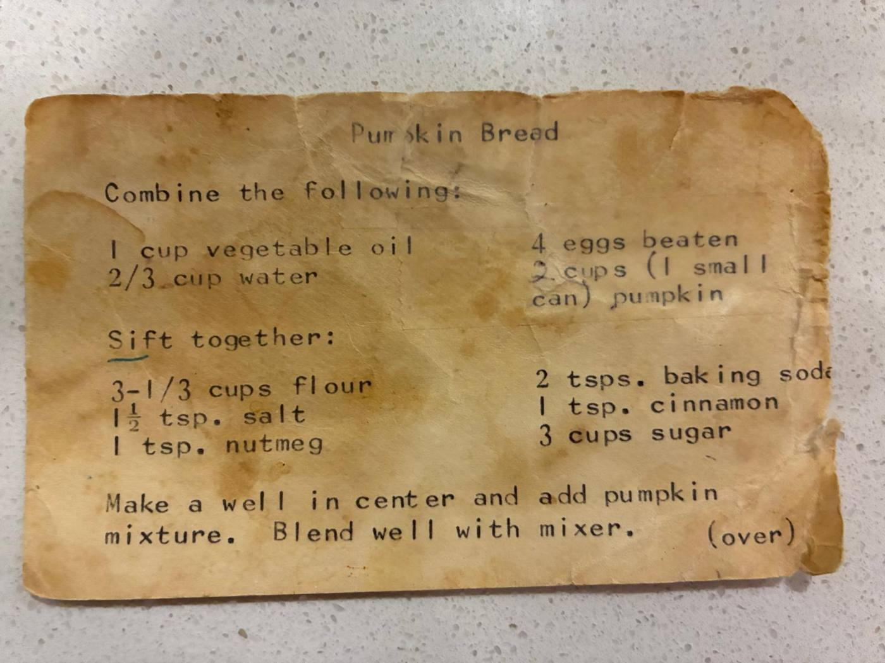
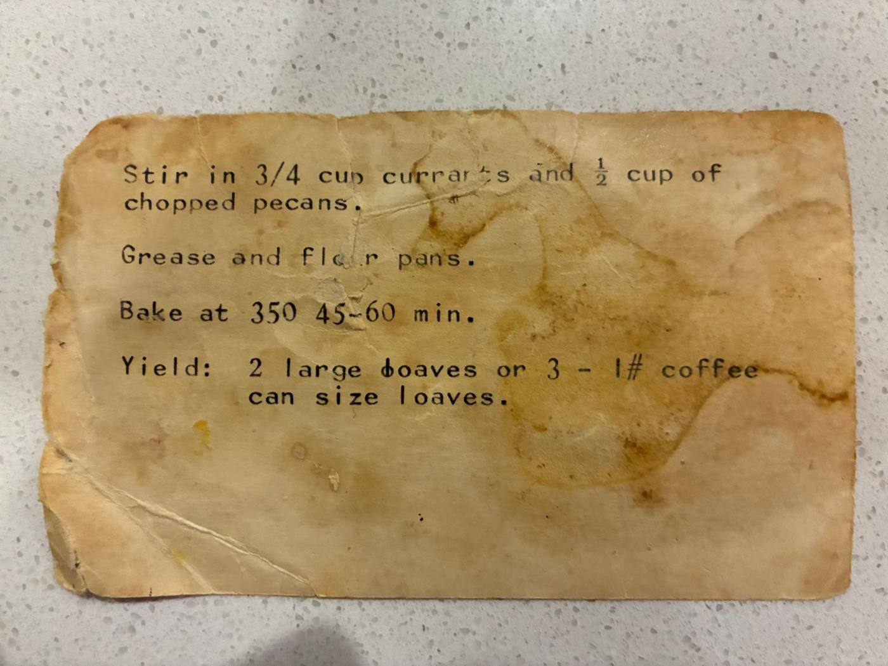

Breads & Sides
Pumpkin Bread
From the kitchen of Mom
Oven350°F
Bake45–60 min
Makes2 large loaves or 3 coffee-can loaves


Mom's original card (front and back) · tap to enlarge
Ingredients
Combine
Sift together
Stir in
Method tap a step to mark it done
- Combine the oil, eggs, water and pumpkin.
- Sift together the flour, baking soda, salt, cinnamon, nutmeg and sugar.
- Make a well in the center of the dry ingredients and add the pumpkin mixture. Blend well with a mixer.
- Stir in the currants and chopped pecans.
- Grease and flour the pans (2 large loaf pans or 3 one-pound coffee cans).
- Bake at 350°F for 45–60 minutes.